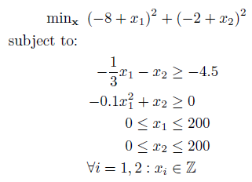
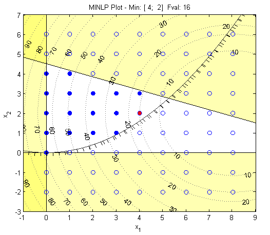

Example 3
Nonlinearly constrained mixed-integer nonlinear program:

The above problem contains a quadratic objective function with one linear and one quadratic constraint. There is an additional constraint where all decision variables must be integers, making this a mixed-integer nonlinear programming problem (or technically a MIQCQP). As with previous examples, create anonymous functions for the objective and constraints. However, note we can enter the linear constraint as a matrix of the form rl ≤ Ax ≤ ru:
% Objective
a = [-8;-2];
fun = @(x) sum((a+x).^2); %note the use of vectorized
commands
% Linear Constraints
A = [-1/3 -1];
rl = -4.5;
ru = Inf;
% Nonlinear Constraints
nlcon = @(x) -0.1*x(1)^2 + x(2);
cl = 0;
cu = Inf;
% Bounds
lb = [0;0];
ub = [200;200];
% Integer Constraints
xtype = 'II';
This can be solved using BARON as follows:
[x,fval,exitflag,info] = baron(fun,A,rl,ru,lb,ub,nlcon,cl,cu,xtype)
The solution is:
x =
4
2
Using MATLAB to plot the solution, we can view the problem:

The MATLAB/BARON interfarce is provided from http://www.minlp.com.